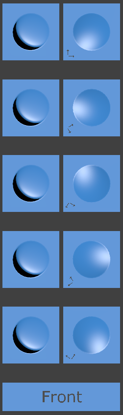

View Demo
I created this model to test how normal, tangent, and bi-tangent vectors behave in various applications and engines. The tiles on the left are hemisphere-on-plane shaped geometry, and the tiles to the right of those are individual quads, which will contain normal-mapped versions of the same geometry (as calculated by Substance Painter 2.4). I've spun the UV maps around in 5 different directions, to cause the tangent vectors to go all different ways.
I don't expect the normal-mapped versions to work off-axis, as the hemisphere geometry is quite large:

But, when viewed directly face-on (orthographic or nearly so), I expect the normal map to closely replicate the geometry, regardless of the orientation of the normal-mapped quad in UV (texture coordinate) space.
Loading the normal map into Blender 2.77's texture image panel appears straightforward, there's even a mapping called "Norm" that sounds correct. But the default behavior here is to take the luminance of the incoming image and treat it as a height map, which is not what we want at all. So while this is a needed step, it is not enough on its own.
 I didn't build this model just to test Blender, of course. There are several combinations of engines and shaders that appear, at least to my eye, to treat normal maps somewhat differently, or produce different results from them. The "twisting around" of the light source shown here is exactly what I'm trying to avoid (although there are additional problems in this image due to incorrect import settings in Blender).
Next let's fix the import settings. Here I've told Blender to treat the incoming image as non-color, and interpret it as a tangent-space normal map, which it is.
Well, that's improved, but I still see the light source moving around when the UV map orientation
changes, so it's no good. It turns out that Substance Painter 2.4 has texture export options for two different
kinds of normal maps, "OpenGL" and "DirectX" (their terms) in the texture export configuration
panel. The "PBR MetalRough" preset in this version defaults to the "DirectX" version, which has
the effect of flipping the V axis vectors (the green channel intensity) compared to "OpenGL" version.
This is not what Blender or Three.JS expects, and so produces the bad result shown here.
At last, the correct result was achieved by using Substance Painter's "OpenGL" export option
paired with the Blender settings shown above. The same map also works in Three.js:
View Demo.
Notice that all of the tiles now appear very consistent when viewed directly face-on, with
the light source coming from the same direction, regardless of the twisting happening in the
texture coordinate space.
I hope this test object proves useful, particularly to the development of glTF 2.0 and its own normal map implementations. The next step from here will be to construct a glTF 2.0 model that uses this map, and test its behavior in a variety of glTF loaders and engines.